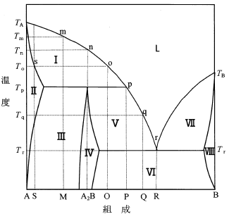

令和4年度 問25 有機化学及び燃料
端成分がA及びBからなる2成分系状態図に関する次のA～Eの記述のうち、不適切なものの組合せはどれか。なお、「\( \overline{XY}\)」という表記は、組成XとYを結ぶ線分の長さを示している。

選択肢
- A、C
- A、D
- B、C
- B、E
- D、E
①
領域Ⅱの構成相はAにBが溶解した相である。
②
組成Mの液相を温度T 0 まで冷却したときの固相と液相の量比は\( \overline{SM}\)：\( \overline{MO}\)である。
③
T r とT p の間の温度における領域IVの結晶相は領域Ⅲと領域Vの2相が存在する。
④
r点は共晶点、T r は共晶温度と呼ばれる。
⑤
T r 以下の領域VIではIVの結晶相とⅧの結晶相の2相が存在する。
正答
③ T r とT p の間の温度における領域IVの結晶相は領域Ⅲと領域Vの2相が存在する。
この図は、AとBからなる2成分系の状態図です。それぞれの領域は異なる相の状態を示しています。
L点は均一な液相です。そこから温度を下げて、各境界を下回ることで結晶が現れ始めます。
領域ⅠはAの固相とLの液相が共存する状態です。領域ⅡになるとA成分の純固相のみが存在する領域で液相は存在しません。
領域ⅦはBの固相とLの液相が共存する状態です。領域ⅧになるとB成分の純固相のみが存在する領域で液相は存在しません。
領域ⅣはA2Bの純固相のみが存在する領域です。領域ⅤはA2Bの固相とLの液相が共存する状態です。領域ⅢにはAとA2Bが、領域ⅥにはBとA2Bがそれぞれ固相として存在します。
選択肢Bの固相と液相の量比は\( \overline{MO}\)：\( \overline{SM}\)：となるため逆です。
※Aの「領域Ⅱの構成相はAにBが溶解した相です。」が適切であるとされていますが、成分Aの固相であるため正しいとは言いづらい内容です。